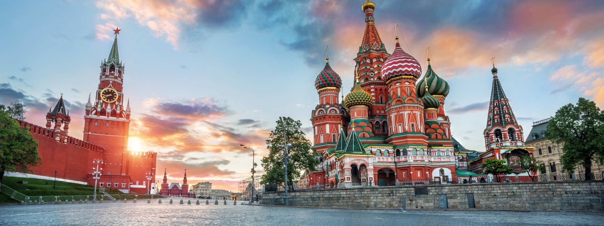
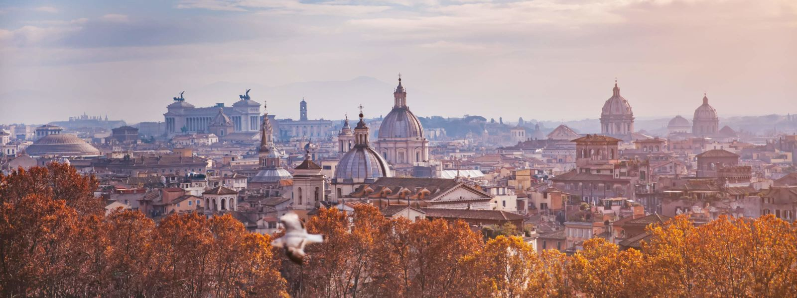
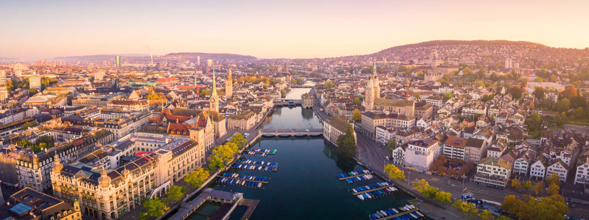

1)Moscou

À primeira vista, Moscou pode intimidar como destino de viagem, especialmente se comparada com cidades bem mais tradicionais no turismo,
a exemplo de Paris e Londres. No entanto, ao desembarcar na capital da Rússia é bem provável que essas primeiras impressões fiquem em segundo
plano diante de uma cidade extremamente vibrante, com bagagem histórica gigante e onde o número de turistas só tem aumentado a cada ano.
2)Roma

Roma, capital da Itália, é a viagem dos sonhos de muita gente e não é difícil entender por que a cidade faz tanto sucesso mundo afora.
Cheia de construções impressionantes, muita história, uma gastronomia maravilhosa e atrações surpreendentes, Roma é aquele misto de caos e
beleza que nenhum outro lugar no mundo é capaz de proporcionar!
3)Zurique

É praticamente impossível não se impressionar logo de cara com a organização e a limpeza de Zurique.
Uma cidade cheia de história e encantadora por diversos motivos, entre eles o belo cenário composto pelo lago
— tendo os Alpes ao fundo — e também pela grande quantidade de atrações oferecidas.